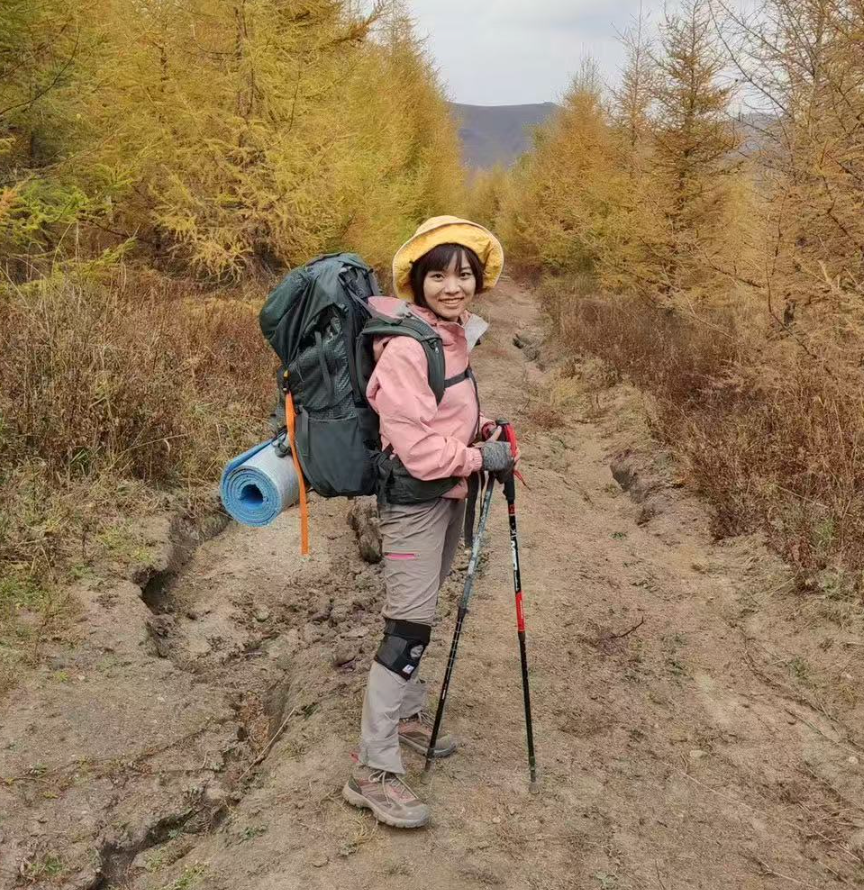

01
Platform Design
Information provision, recommender systems, and matching mechanisms, with an emphasis on user privacy, participation, and behavioral responses.
Related researchAssistant Professor
A. B. Freeman School of Business, Tulane University
My research examines AI as infrastructure for innovation, knowledge production, and organizational activity, with a focus on platform design, AI for science, and human-AI co-evolution.
EDUCATION & APPOINTMENTS
Ph.D. in Management Information Systems
Tsinghua University · 2019
Previously at the University of Minnesota’s Carlson School and the University of Houston’s Bauer College as a postdoctoral fellow.
03 / AWARDS
Decision Sciences Institute (DSI) Annual Conference
Learning of GenAI Adoption
INFORMS Annual Meeting
The Role of AI Assistants in Online Shopping Platforms: Evidence from Livestream Selling
International Conference on Information Systems (ICIS)
Preserving User Privacy Through Ephemeral Sharing Design: A Large-Scale Randomized Field Experiment in the Online Dating Context
Americas Conference on Information Systems (AMCIS)
The Sales Data Sells: Effects of Real-Time Sales Analytics on Live Streaming Selling
A. B. Freeman School of Business, Tulane University
Undergraduate Core Excellence · A. B. Freeman School of Business, Tulane University
Tsinghua University
Tsinghua University
Tsinghua University
Top 1% · Ministry of Education of the People’s Republic of China
Top 1% · Tsinghua University
Tsinghua University
People.cn
Ministry of Education of the People’s Republic of China
Tsinghua University
Top 1% · Tsinghua University
Ministry of Education of the People’s Republic of China
Top 2% · Beijing University of Posts and Telecommunications
Ministry of Education of Beijing
Top 2% · Beijing University of Posts and Telecommunications
Top 1% · Ministry of Education of the People’s Republic of China
Tulane University · 2023-2024 · $5,000
Tulane University · $1,000
Tsinghua University
International Public Relations Association
Beijing University of Posts and Telecommunications
Beijing Collegiate Track and Field Meet
04 / BEYOND RESEARCH
Outside academia, I enjoy running and mountaineering. As an undergraduate, I was a track and field athlete, competing in middle- and long-distance running and the 400 meters. In 2019, I was a member of Tsinghua University’s mountaineering team.
I approach research, teaching, and life with optimism, curiosity, and persistence. Sports are an important source of energy and balance in my daily life.
